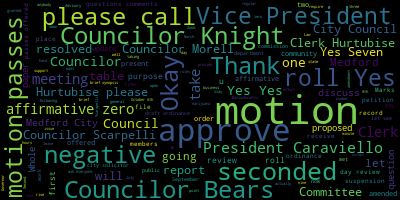
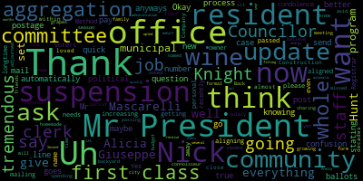

AI-generated transcript of City Council 10-13-20
English | español | português | 中国人 | kreyol ayisyen | tiếng việt | ខ្មែរ | русский | عربي | 한국인
Back to all transcripts
[Falco]: The 29th regular meeting of the Medford City Council will now come to order. Clerk, please call the roll.
[Hurtubise]: Councilor Bears?
[Falco]: He is present.
[Hurtubise]: Excellent. Vice President Caraviello? Present. Councilor Knights?
[Falco]: Here.
[Hurtubise]: Councilor Marks? Present.
[Falco]: Present. She is present.
[Hurtubise]: Thank you. Councilor Scarpelli?
[Falco]: Present. Present. All seven members are present. At this time, I'd ask everyone to please rise to salute the flag. I pledge allegiance to the flag of the United States of America and to the Republic for which it stands, one nation under God, indivisible, with liberty and justice for all. Oh, actually, let me read the notice first. Pursuant to Governor Baker's March 12, 2020 order suspending certain provisions of the Open Meeting Law, General Law, Chapter 38, Section 18, and the Governor's March 15, 2020 order imposing strict limitation on the number of people that may gather in one place, this meeting of the Medford City Council will be conducted via remote participation to the greatest extent possible. specific information and the general guidelines for remote participation by members of the public and or parties with the right and or requirement to attend this meeting can be found on the City of Medford website at www.medfordma.org. For this meeting, members of the public who wish to listen or watch the meeting may do so by accessing the meeting link contained herein. No in-person attendance of members of the public will be permitted. but every effort will be made to ensure that the public can adequately access the proceedings in real time via technological means. In the event that we are unable to do so, despite best efforts, we will post on the city of Medford or Medford community media website, an audio or video recording transcript or other comprehensive record of proceedings as soon as possible after the meeting. To participate remotely outside of Zoom, please email City Clerk, Adam Hertubise at A-H-U-R-T-U-B-I-S-E at medford-ma.gov.
[Scarpelli]: Councilor Scarpelli.
[Falco]: On the motion of Councilor Scarpelli to suspend the rules, seconded by Vice President Caraviello. Clerk Hertubise, please call the roll.
[Hurtubise]: Councilor Bears?
[SPEAKER_14]: Yes. Oh, there you go.
[Hurtubise]: Vice President Caraviello? Yes. Councilor Morell?
[Falco]: Yes.
[Hurtubise]: Councilor Scarpelli? Yes. President Falco?
[Falco]: Yes. Seven in the affirmative, zero in the negative. The rules are suspended. Petitions, presentations, and similar papers. 20-598, petition for comment, vigil, and license by Clodian Quirazi, 94 Birch Street, Peabody, Massachusetts, 01960 for Helen's Roast Beef. and Pizzeria 321A, Boston Ave, Medford, Massachusetts 02155. On file is a business certificate number 175, building department, fire department, police traffic impact, health department, letter of compliance, state tax ID, workman's compensation, petition, and treasurer. At this point, I recognize the chairperson of licensing, Councilor Schakopiela.
[Scarpelli]: Thank you, Council President. Is the petitioner available?
[Falco]: I believe he is, yes. Clodion, I'm going to unmute you. Clodion, if we could please have your name and address for the record.
[SPEAKER_13]: I'm 94 First Street, Peabody, Massachusetts, 01960.
[Scarpelli]: OK, thank you, Clodion. I see that everything is in order. I know that you are moving in. to the old Jumbo Pizzeria on Boston Ave?
[SPEAKER_14]: Jumbo Pizzeria on Boston Ave.
[Scarpelli]: Yes. Do you have your hours of operations?
[SPEAKER_13]: Do you have your hours of operations? Yeah, it will be from 11 AM till 3 AM.
[Scarpelli]: OK, I think that the hours of operations has to come in front of our board, too, just so you know that. The hours of operations have to be adjusted, just so you know.
[SPEAKER_14]: Can you put this down?
[Falco]: I'm trying to get him to turn it on. If I may for one minute, we're trying to work on some technical issues. So I'm going to try to see if we can get the volume turned up here in the chambers. So if you could please allow us just two quick minutes.
[Caraviello]: So if I may, I talked to Patrick, it's because he's on the phone and that's why it's coming through so light.
[Falco]: So.
[Scarpelli]: Okay, so the license goes until 11 o'clock.
[SPEAKER_14]: The license goes until 11 o'clock.
[Scarpelli]: So you would have to petition to extend that. I just want to make sure you knew that. To extend that.
[SPEAKER_13]: I have to petition to extend that?
[Scarpelli]: You're not allowed to open after 11.
[SPEAKER_13]: You're not allowed to open after 11. After 11 AM?
[Scarpelli]: PM. Without a special permit, correct?
[SPEAKER_13]: Without a special permit, correct. Right now it's operating after 11, so.
[Scarpelli]: Right, that license goes with that business.
[SPEAKER_14]: That license goes with that business. Okay, so.
[Scarpelli]: If you can't contact, just contact the clerk.
[SPEAKER_14]: If you can't contact, just contact the clerk.
[Scarpelli]: Tomorrow and he can fill you in.
[SPEAKER_14]: Okay, so what do I have to do after? Tomorrow and he can fill you in.
[Scarpelli]: This is terrible. OK, but I see everything is in order.
[SPEAKER_14]: I see everything is in order.
[Scarpelli]: So I move approval after my colleagues have questions.
[Falco]: I move approval after my colleagues have questions. Thank you, Councilor Scarpelli. Thank you. On the motion of Councilor Scarpelli, seconded by Vice President Caraviello. Mr. President, if I may? Any questions? Oh, yes, Councilor Wright.
[Knight]: Can the petitioner please, Mr. President, describe how many employees he's going to have working for him?
[SPEAKER_13]: How many employees? Well, I don't know right now. I'm taking it over probably two or three in the beginning. Two maybe. I don't know.
[Knight]: You'll have to carry insurance if you're going to be having employees. And I find it hard to believe you wouldn't have any employees if you were going to be open 15 hours a day.
[SPEAKER_13]: I know, but I don't know. I'm taking it over. So I will take insurance, of course.
[Knight]: I missed that.
[SPEAKER_13]: Did you say you're going to be taking out insurance?
[Falco]: The question was, are you going to be taking out insurance? Are you going to be taking out insurance?
[SPEAKER_13]: Yes, I will take insurance, of course.
[Knight]: It's required, and if he doesn't, he's going to be subject to fine.
[Falco]: Any other questions? Okay, the motion to consult Scarpelli, seconded by Vice President Caraviello. Clerk Hurtubise, please call the roll.
[Hurtubise]: Councilor Bears? Yes. Vice President Caraviello? Yes. Councilor Knight?
[Knight]: No, on the grounds he doesn't have insurance, Mr. President.
[Hurtubise]: Thank you. Councilor Marks.
[S_jvt8DRKHw_SPEAKER_06]: Yes.
[Hurtubise]: I didn't hear Councilor Marks.
[S_jvt8DRKHw_SPEAKER_06]: Yes.
[Hurtubise]: He said yes. Thank you. Councilor Morell.
[S_jvt8DRKHw_SPEAKER_06]: Yes. Councilor Scarpelli. Yes.
[SPEAKER_14]: President Falco.
[Falco]: Yes. Six in the affirmative, one in the negative. The motion passes. Congratulations. Good luck and please contact the city clerk for additional information regarding hours of operation. Thank you.
[Bears]: Motion to revert back to the regular.
[Falco]: While we're under suspension, 20-597. And that is under. 0597. Offered by Councilor Bears, be it resolved that the Medford City Council, be it resolved by the Medford City Council that the city administration provide an update on the status of the fiscal year 2021 state budget and its impact on city revenue. Councilor Bears.
[Bears]: Thank you, Mr. President. Thank you, Councilor Knight. The city and school budget are still, I would say, in crisis. We don't know yet what the impact of state and federal funding is going to be. It seems that there's a stalemate at the federal level, and it now seems like there's not clarity at the state level regarding the state budget. I know that there was a commitment to maintain Chapter 70 funding and unrestricted general government aid. But again, it seems like the state is unsure of where things are going to go. So I was hoping to get an update from the city administration on their view on the state budget talks and what they think the impact could be on city revenues.
[Falco]: Thank you, Councilor Bears.
[Knight]: Councilor Knight. Yes, Mr. President, I do believe it was three or four weeks ago that this council passed a resolution. And that resolution was to request that the Director of Finance appear before this body to meet with us to talk about the first quarter and what our revenues look like and future projections, Mr. President. And these papers are of similar matter in content and subject matter, and I was wondering if the Finance Director was available with us this evening.
[Falco]: She is not, but what I can do is I can set up, would you like to committee the whole? No.
[Knight]: I'd like you to appear before the council to talk to us about the projections and the revenue forecasts and where we are in terms of this time last year and what our financial picture looks like, Mr. President. This was something we talked about where we requested that you appear before us quarterly back when the budget was going on. That was a part of the budget papers. When we discussed and deliberated the budget, we requested that we get quarterly updates on the revenue projections. The first quarter has ended and it's time.
[Falco]: You are correct. Okay, thank you Councilor Knight. Would anybody else like to speak on this issue? Okay. Seeing and hearing none, on the motion of, let's see, no one has a hand raised, okay. On the motion of Councilor Bears, seconded by Councilor Knight. Clerk Coonerty, please call the roll.
[S_jvt8DRKHw_SPEAKER_06]: Councilor Bears. Yes.
[Hurtubise]: Vice President Caraviello. Yes. Councilor Knight? Yes. Councilor Marks? Yes. Councilor Morell? Yes. Councilor Scarpelli? Yes. President Falco?
[Falco]: Yes. 70 affirmative, zero negative, the motion passes.
[Bears]: Motion to revert back to the regular order of business.
[Falco]: On the motion of Councilor Bears to revert back to the regular order of business, seconded by Councilor Morell. Clerk Hertoghies, please call the roll.
[Hurtubise]: Councilor Bears? Yes. Vice President Caraviello. Yes. Councilor Knight. Yes. Councilor Marks. Yes. Councilor Morell. Yes. Councilor Scarpelli. Yes. President Falco.
[Falco]: Yes, 70 affirmative, zero in the negative. We will now revert to the regular order of business. Motions, orders, and resolutions 20-476.
[Knight]: Mr. President, motion to waive the reading for a brief synopsis. This matter has been on the agenda now for three consecutive weeks.
[Falco]: Okay.
[Knight]: Second.
[Falco]: On the motion of Councilor Knight, seconded by Councilor Bears for a brief synopsis. Councilor Knight, would you like to give that brief synopsis?
[Knight]: Certainly, Mr. President. The paper before us this evening- We can vote on it.
[Falco]: Okay. On that motion, Clerk Hurtubise, please call the roll.
[Hurtubise]: Councilor Bears?
[Knight]: Yes.
[Hurtubise]: Vice President Caraviello? Yes. Councilor Knight? Yes. Councilor Marks? Yes. Councilor Morell? Yes. Councilor Scarpelli? Yes. President Falco?
[Falco]: Yes. 70 affirmative, 0 negative. The motion passes. Councilor Knight?
[Knight]: Yes, Mr. President. This is a companion paper to the zoning amendment that the council just passed recently. What it is is it's a paper that would establish a selection committee for applicants for marijuana licenses in the city of Medford as required by state law and by the will of the voters here in the community. This document would allow by right marijuana establishments to be located in commercial to or industrially zoned districts by way of a special permit, Mr. President. It outlines a selection committee that's chaired by the chief of police and has five members which would rank and interview the applicants and make recommendations to the mayor who would have the power to enter into a host community agreement to issue a license to one of the applicants, Mr. President. So this is a paper that has been before us for a number of years, about five years, half a decade. I'm glad to see that it's finally come to the finish line, Mr. President, and I would move for approval. There was some discussion and some concern about the 3% local option tax that would be included in this paper, and at the advice of our city solicitor, Kimberly Scanlon, she has provided us with the legal opinion that we can do that by way of adopting a local option. I'd ask that that local option be placed on the agenda next week, Mr. President. so that we can vote on that. It doesn't have to be done this evening according to what our legal counsel tells us. I'm very glad that we asked Solicitor Scanlon this question because we were waiting for Kopelman and Page to give us an answer now for at least five weeks on it, and we didn't get that. So I'd like to thank Solicitor Scanlon personally for the work that she's done in allowing us to bring this as far as we have. So with that being said, Mr. President, that's the brief synopsis of the paper that's before us, and I'd move for approval of the paper. Second.
[Falco]: Thank you, Councilor Knight. On the motion of Councilor Knight, seconded by Councilor Bears. Any questions, comments from the council? Anyone online here? Okay, no one has a hand up. Okay, on that motion, Clerk Hurtubise, please call the roll.
[Hurtubise]: Mr. President, a brief question.
[Falco]: Yes.
[Hurtubise]: Is this for first reading or for approval? This is for first reading.
[Falco]: For the first reading, yes.
[Hurtubise]: Okay, here comes the roll call. Councilor Bears? Yes. Vice President Caraviello? Yes. Councilor Knight? Yes. Councilor Marks? Yes. Councilor Morell? Yes. Councilor Scarpelli? President Falco?
[Falco]: Yes. Seven in the affirmative, zero in the negative. The motion passes and it passes its first reading. Thank you, Councilor Knight for that brief synopsis. 2-0-590 offered by Councilor Knight and Councilor Scarpelli be it resolved that the Medford City Council request the representatives from Amazon.com distribution branch appear before the Medford City Council to discuss the practices of its drivers in the city of Medford. Councilor Knight.
[Knight]: Mr. President, thank you very much. I am a self-identifying amazon.com addict. I have boxes delivered to my house constantly. And as we go through the coronavirus, COVID-19 pandemic, I think we've all become far more reliant on delivery services like this. But with that being said, Mr. President, while Amazon does provide a great value and a great service to those of us in this community, the driving practices of their delivery drivers aren't exactly up to par. I don't think Mr. Jotis or Mr. Bruno gave them a training course on how to drive here in Medford. A lot of times what we'll see, Mr. President, is an Amazon truck that's making a delivery, drive down, say, a small side street like Billings Avenue in South Medford. And they come up to the house and they say, this is a good spot to stop. right in the middle of the street. And they park their car, and they get out, and they make a delivery, Mr. President. It's creating safety issues. It's creating quality of life issues. It's creating traffic issues in the community. I know that amazon.com is a good neighbor, a good creator of jobs here in the community, with good paying jobs. And we appreciate the work they do. And I know that if we have the opportunity to speak with them, I think that they'll be willing to work with us in assuming a partnership that allows us to address this issue. So with that being said, I rest my case. Move the floor to my council colleague and co-sponsor of the resolution, Councilor Scott Peli.
[Falco]: Thank you, Councilor Knight. Councilor Scott Peli.
[Scarpelli]: Thank you, Mr. President. Thank you, Councilor Knight, for your synopsis. I think that with that, if I could, can I amend the paper? I know that once our constituents read the agenda, if we could amend it and ask for a representative for both Uber and Lyft. That for their same practices, we know that they're very important to our community. But at the same time, their practices are stopping wherever they want and causing dangerous issues with possible road rage issues, I think that's one of the constituents that I talked to this week, is making sure understanding what is the reasoning for stopping in the middle of the street and with no regards to other vehicles or pedestrians or bike riders. So if we can make that amendment, thank you, Mr. President.
[Falco]: Thank you, Councilor Scarpelli. Councilor Bears.
[Bears]: Thank you, Mr. President. Thank you to my colleagues for putting this resolution on the agenda. I'm happy to see the amendment, including Uber and Lyft. I think what we've seen is that these app-driven companies are looking at non-traditional, I guess might be the best word to use, methods of delivery. And, you know, I'm hopeful. I'm glad this is on. I hope we can come to a good agreement. But I am a little concerned. I just found out the other week that Amazon's guidelines actually set and requested all of the delivery companies that they use have their vans a certain size. And that size is about one inch smaller than would require federal regulation. So, you know, they're really leaning into some less than credible business practices in order to, you know, to be replaced with an Amazon distribution center. So I think this problem will only grow over
[Falco]: Thank you, Councilor Peers. Vice President Caraviello.
[Caraviello]: Thank you, Mr. President. I appreciate my fellow councilors putting this out there with Amazon and Uber and Lyft, but it isn't just them. It's really, it's FedEx, it's UPS, it's GrubHub, it's, I mean, everybody's getting everything delivered to their house via some kind of vehicle. So it's really very vast now. who's delivering, who's not delivering. And I see them, people just park the car and get out and leave it in the middle of the street and don't really care. So I think it's. How do we get the message to all of them? I don't know. But I think we do need to clamp down on this subway line, because everybody's on the timetable, and everyone's just rushing around, speeding around the streets, and disregarding our laws also. So that's part of the problem too. I don't know how we get the message out to everybody, all these different groups. Maybe it's up to the chief to figure out, maybe there's some network to get them out to. But the Amazon guys, as I said, they're everywhere now. And like Councilor Beall said, they're opening two spots up in Revere. I mean, hundreds more trucks hitting the streets. Again, I thank my councilors for putting this on tonight.
[Falco]: Okay, thank you, Vice President Caraviello. On the motion of Councilors Knight and Councilor Scarpelli, as amended by Councilor Scarpelli and seconded by Councilor Bears. Clerk Hurtubise, please call the roll.
[Hurtubise]: Councilor Bears?
[S_jvt8DRKHw_SPEAKER_06]: Yes.
[Hurtubise]: Councilor Layton. Yes. Councilor Barks. Yes. Councilor Morell.
[Falco]: Yes.
[Hurtubise]: Councilor Scarpelli.
[Falco]: Yes.
[Hurtubise]: President Falco.
[Falco]: Yes, 70 affirmative, zero in the negative, the motion passes. 20-591 offered by Councilor Knight, be it resolved that the city solicitor provide an opinion on the following question. Does a meeting posted for a certain date that extends past midnight and into a different date create the potential for an open meeting law violation? Councilor Knight.
[Knight]: Yes, Mr. President, it's becoming quite frequent that the parties' meetings start at 5.30 and end after midnight. And that raises the question as to if a meeting is posted for Tuesday evening between 7 and 10 p.m. and it's going to be broadcast on Zoom and it goes past the posted hours, and then further on into the next day, whether or not that would create the potential for an open meeting law violation. I know there are many concerned citizens in Medford that have raised some issues about open meeting law in the past. So as we move forward and work towards full and total compliance with the open meeting law and do our best to do such, I ask the question to the city solicitor, Mr. President. So I move for approval and ask my council colleagues in support to pay it up.
[Falco]: Thank you, Councilor Knight. On the motion of Councilor Knight, seconded by Councilor Scarpelli, Councilor Bears.
[Bears]: It's not an amendment or anything. I would just add, it might be worth us taking a look at the summer schedule. I'm not sure if these long meetings have been impacted by the summer schedule of the council or not, but I obviously support the measure and getting the opinion. Thank you.
[Falco]: Thank you, Councilor Bears. Anybody else want to speak on that? No? Okay. On the motion of Councilor Knight, seconded by Councilor Scarpelli, Clerk Carter, please call the roll.
[Hurtubise]: Councilor Bears.
[S_jvt8DRKHw_SPEAKER_06]: Yes.
[Hurtubise]: Vice President Caraviello. Yes. Councilor Knight.
[S_jvt8DRKHw_SPEAKER_06]: Yes.
[Hurtubise]: Councilor Marks. Yes. Councilor Morell.
[S_jvt8DRKHw_SPEAKER_06]: Yes.
[Hurtubise]: Councilor Scarpelli. Yes. President Falco.
[Falco]: Yes. Seven the affirmative, zero the negative, the motion passes. 2-0-592 offered by Councilor Knight. Be it resolved that the hours of Park Method's Main Street office be reviewed to ensure that it is open later than 2 p.m. at least one day per week. Councilor Wright.
[Knight]: Mr. President, thank you very much. Park Medford's opening at, I guess we'd call, modified hours at this point in time, 9 a.m. to 2 p.m. daily, and it creates a little bit of a hardship for individuals in this community that work, that might want to pick up the phone and call over there to ask some questions, to appeal a ticket over the phone. So I'm asking that the administration take a look at the negotiation that they did with Park Medford and the contract that they have in place to allow them to modify their hours and see if we can have one night a week with their open late, maybe the same night, like Wednesday nights that coincides with city halls late. But just the night so that people know that they can take care of city business and all city offices are going to be open and available.
[Falco]: Thank you, Councilor Knight. Any questions, comments from the council? No questions online. On the motion of Councilor Knight, seconded by?
[Bears]: Second.
[Falco]: Vice President Caraviello, Clark-Cunningham, please call the roll.
[Hurtubise]: Councilor Bears?
[S_jvt8DRKHw_SPEAKER_06]: Yes.
[Hurtubise]: Vice President Caraviello?
[S_jvt8DRKHw_SPEAKER_06]: Yes.
[Hurtubise]: Councilor Knight?
[S_jvt8DRKHw_SPEAKER_06]: Yes.
[Hurtubise]: Councilor Marks?
[S_jvt8DRKHw_SPEAKER_06]: Yes.
[Hurtubise]: Councilor Morell?
[S_jvt8DRKHw_SPEAKER_06]: Yes.
[Hurtubise]: Councilor Scarpelli?
[S_jvt8DRKHw_SPEAKER_06]: Yes.
[Hurtubise]: President Falco.
[Falco]: Yes, setting the affirmative, zero in the negative, the motion passes. 20-593 offered by Councilor Morell. Be it resolved that the City Council request from the administration a current list of non-ADA compliant sidewalks in the city and to the extent that it exists, plans to update and bring into compliance said sidewalks. Councilor Morell.
[Morell]: Thank you, Mr. President. I raised this at this time, make this request based on a number of things we've been talking about recently. And I do want to point out the fact that I know our engineering department and DPW does great work on updating our sidewalks and bringing them into compliance as intersections and sidewalks are updated, projects happen. But we've been having a lot of discussions. I know Councilor Behr has introduced and resolution last week, looking at our snow removal ordinance. And Councilor Knight brought up a number of salient points as far as the massive amount of work that our DPW has already and really could be doing to improve accessibility in our community. And we've also had a number of discussions with a fine point on equity in the past several months. So I think when we're looking at all of these things, we have to consider our streets and our sidewalks and accessibility issues and whether or not they're actually accessible and equitable to everyone in our community. I know the ADA is essentially an unfunded mandate, so it's really challenging for cities to do the amount of work that needs to be done to make sure our streets and our sidewalks are accessible to everyone. But I think it's really important as we come around the calendar and start looking at another budget time to understand where we stand as a city as far as accessibility with our sidewalks and what work there is, also possibly what grants we've already pursued and plans to update as far as complete updates that sidewalks will be brought into compliance because it's a massive project, but also looking at those sidewalks individually. So I'm just really trying to gather information so we can make the best decisions come budget time and making sure we're supporting work that really needs to be done in the city. So I move approval. Okay.
[Falco]: On the motion of Council Morales, seconded by Vice President Caraviello, Council Knight.
[Knight]: Mr. President, I support this paper wholeheartedly, and I'd like to add a amendment or a B paper. Just several weeks ago, I believe we talked about accessibility, and there's one aspect of accessibility, which is design and construction. And there's another aspect of accessibility, which is government-created accessibility issues through permitting. And I know a number of us behind this rail spoke about some concerns that they had with Snappy Patty's location in the sidewalk there, and we had requested an update from our ADA compliance officer, the director of diversity. And I don't believe that paper has been forthcoming, Mr. President. So I'd like to, again, reiterate that request.
[Falco]: Okay. Councilor Morell, is that okay if that's an amendment? That works. Okay, perfect. Any other questions or comments from the council? Okay, on the motion of Councilor Morell, seconded by Vice President Caballero, as amended by Councilor Knight. Clerk Cunabes, please call the roll.
[Hurtubise]: Yes. Yes. Yes. President Falco.
[Falco]: Yes, 70 affirmative, zero in the negative. The motion passes. 20-594 offered by Councilor Morell. Be it resolved that the City Council receive an update from Medford's Massport Community Advisory Committee representatives, Peter Houck and Luke Prasner in response to the recent FAA rejection of dispersion concepts to mitigate airplane traffic and the resulting noise and pollution over Medford. Councilor Morell.
[Morell]: Thank you, Mr. President. And I do want to point out, I know Councilor Marks introduced a similar paper back in June, but since then, so I think the last time we had a visit by Peter and Luke was actually, I believe, in October. I can't be positive, but I believe that was the last time we got the update as far as the number of different approaches that were going to be presented to the FAA as far as dispersion and mitigation of the onslaught of air traffic over Medford. And in the middle of August, August 15th, a decision came down from the FAA and they rejected all of the concepts that were presented. I know the mayor has expressed her dismay and I think it would be really helpful to get an update directly from Peter and Luke as far as where do we go from here. It's my understanding from some outreach we've gotten that this isn't good, but we're not without hope. So I think it'd be really effective for the council to know what are our options after this rejection from the FAA. Thank you.
[Falco]: Councilor Morell. Councilor Bears.
[Bears]: Thank you, Mr. President. Thank you, Councilor Morell, for putting this on. And Councilor Marks for bringing it up previously. This plane noise thing has been an issue for a long time, but it's gotten a lot worse recently. And I just want to applaud everybody. I know there are a lot of people in Medford, in addition to Peter and Luke, who are really working on this. I want to applaud their efforts. I think another point where we can be hopeful is hopefully a new federal administration will help to move this along in a better way, and hopefully we'll be there soon. But I just really want to thank everyone for the work they're doing and also encourage people to continue sending complaints about airplane noise to Massport and the FAA. I think that's an essential piece of this. And if we can keep documenting and providing the data of the impacts, this is making making backyards unlivable, waking people up at 545 in the morning. I think we just need to keep pushing that. And I thank everyone who's been doing that.
[Falco]: Thank you, Councilor Bears. Any other questions, comments?
[Caraviello]: Vice President Caraviello. Thank you, Mr. President. Mr. President, maybe we should be notifying our federal delegation about this. They may not be aware of the decision that's happened. Congresswoman Clark has been very helpful over the past couple of years with this. Maybe we should bring them and notify them of this decision also, Mr. President.
[Falco]: Okay. Are you amending the paper? Okay.
[Caraviello]: If we amend it to notify our federal delegation of this, especially Congresswoman Clark, where she's been our point person over the last few years in this.
[Falco]: Okay. Thank you, Vice President Caraviello. Any other questions, comments from the council? Any questions here on Zoom? Nope. Okay. On the motion of Council Morell, I seconded by second vice president. Caraviello is amended by vice president. Caraviello quicker to be, please call the roll.
[Hurtubise]: Councilor Scarpelli? Yes. President Falco?
[Falco]: Yes. Seven in the affirmative, zero in the negative. The motion passes. 20-595 offered by Councilor Bears, be it resolved that the Medford City Council express its support of H5018, an act to guarantee housing stability during the COVID-19 emergency and recovery. Be it further resolved that the City Clerk forward a copy of this resolution to the Medford Legislative Delegation as well as House Speaker DeLeo, Senate President Spilka, and Governor Baker, Councilor Bears.
[Bears]: Thank you, Mr. President. The state's eviction and foreclosure moratorium for the duration of the COVID-19 pandemic, well, it was supposed to be for the duration of the COVID-19 pandemic, but it expires on Saturday, the 17th of October. Governor Baker has the authority to extend it, but is indicating that he will not. He's introduced a package of some assistance that could help people, but Essentially, unless a law is passed by the State House and State Senate, the eviction and foreclosure moratorium will abate. It will no longer be in effect. We have an eviction and foreclosure crisis coming very soon. If this moratorium is not extended, courts, in fact, the Massachusetts courts are hiring back retired judges just to handle the additional influx of cases that they're expecting. The Act to Guarantee Housing Stability is legislation with broad support in the House to fix this, and also to help not only tenants and homeowners, but also landlords, in addition to extending the moratorium. It also provides significant legal resources to all people involved in housing to help us get through this crisis. And I want to thank Senator Jalen, Representative Donato, Representative Garbally, and Representative Barber, who are all co-sponsors of this bill. And I think we should send a message as the city of Medford that we need to get this done It's great that our legislative delegation is on top of it But you know I think it's important to show that municipalities are very concerned about it that we're concerned about making sure that people have housing stability here in Medford and Hopefully, you know our nudge is combined with the nudges of a lot of other advocates and and local officials in in ensuring that we have real housing stability during this pandemic. And especially during this winter where, you know, in some parts of Boston, we're already seeing people set up tents in parks because they have been either kicked out of housing or didn't know their rights relative to the moratorium. So this is going to get serious. And I think it's important that we try to do our part to get some legislation passed at the state level to address it. Thank you.
[Falco]: Thank you, Councilor Bears. Councilor Morales.
[Morell]: Thank you, Mr. President. I want to thank my council colleague for bringing this forth and really echo what he said, where, um, not only we're in crisis right now and there's an even larger crisis looming. So I really appreciate that our state delegation, um, is leading on this. And I think it's, it's clear where this entire pandemic we've been trying to figure out where help is coming from different levels. And I think it's very clear that it's not coming from the federal level. So I think what we can do at the state level to, um, protect residents, uh, in Medford is really important. So, um, this of course has my support. Thank you.
[Falco]: Thank you, Councilor Morell. Any other questions, comments from the council? Okay. Anyone? No one has a hand up. Zoom. On the motion of Councilor Bears, seconded by Vice President Caraviello. Clerk Carter, please call the roll.
[Hurtubise]: Councilor Bears.
[S_jvt8DRKHw_SPEAKER_06]: Yes.
[Hurtubise]: Vice President Caraviello.
[Falco]: Yes.
[Hurtubise]: Councilor Knight.
[Falco]: He is locked the room.
[Hurtubise]: Okay. Councilor Marks. Is that a no?
[Falco]: No. That is a no.
[Hurtubise]: Councilor Morell?
[Falco]: Yes.
[Hurtubise]: Councilor Scarpelli?
[Falco]: No.
[Hurtubise]: President Falco?
[Falco]: Yes. 4 in the affirmative, 2 in the negative, 1 absent. The motion passes. 20-596, offered by Councilor Bears. Be it resolved by the Medford City Council that the City Clerk provide a brief update on preparations for the November 3rd general election. Councilor Bears.
[Bears]: Thank you, Mr. President. I know that our city election staff, the clerk and folks in the registrar's office have been working incredibly hard to meet this moment of, you know, an election that nobody expected during a pandemic that nobody expected. There's obviously a huge influx of mail ballot requests, just like there was for the September primary. And I just want to commend, first commend the city election staff on their work on the mail ballots. I think that's really gone very well this time. And also commend all the folks who stepped up to join the team and work with the city election staff. early voting starts this next week as well. So that's another option that people have in addition to the mail ballots, and of course, election day voting on November 3rd. And I was hoping we could hear a little bit more from the clerk about what they've been doing around election preparation for the November 3rd general election. Thank you.
[Falco]: Thank you, Councilor Piz. Clerk Hurtubise, would you be able to give us an update?
[Hurtubise]: Absolutely. One quick point. Early voting actually starts on Saturday at nine o'clock at City Hall. It's from nine to three on Saturday, nine to three on Sunday. And then it goes for the following, it goes during the week, during normal city hall business hours. So it'll be two Saturdays and two Sundays of early voting from nine to three. And then two weeks of early voting at city hall during normal city hall business hours. And voters can choose to return their mail ballots, they can choose to early vote in person, or they can choose to vote in person on election day. So they have three options to vote. to give a little perspective for the. September primary, we processed a little over 12,000 requests, I believe, for mail-in and absentee ballots. As of today at three o'clock, we have received 14,200 requests for absentee and early voting ballots. As of three o'clock today, we have mailed out 13,528 early voting or absentee ballots, which is 96% compliance, according to the Secretary of State's office. There are also about 250 overseas absentee ballots out there with roughly 100 of them have come back already. So we are in full swing for the November election. We are ahead of where we were in September, and we're getting more ballots out every day. We're also getting more requests in every day, but the request number has tripled down with the number of postcards that have come back.
[Falco]: Thank you, Clerk Arnabes. Any other questions, comments? Councilor Knight.
[Knight]: Yes, Mr. President, I have a couple of questions concerning the applications for vote by mail. It's my understanding that this whole process was handled in-house, is that correct?
[Hurtubise]: That is correct, Councilor.
[Knight]: Last Tuesday night, when we were here at the meeting, I had to use the restroom and I went out and I heard the postage machine going. And I went in there and one of our representatives of our building department was running ballots through the postage machine. And that got me to thinking, why is it that we're mailing these with a first class stamp on them, if we could send it to a mail house and do an enhanced carrier route line of travel, we'd probably be able to cut down the cost of the actual mailing for the applications to vote by mail. So I didn't know if there was some sort of requirement that these had to be mailed by first class, or if we could have done an enhanced carrier route line of travel bulk mailing to deliver these ballots and save some money.
[Hurtubise]: Council, that's an excellent question. The reason we're mailing these out first class is because We have Cindy Gale, our election coordinator, has been working with the post office. And if we mail these out as first class mail in Medford, these ballots will stay in Medford. If they are bulk mailed, they go to Boston, and then they come back to Medford, and they take significantly longer to reach residents. So they get out of the building faster, and they stay in Medford, and they're delivered to residents faster if they're mailed first class right from Medford. So that's why it's going that way.
[Knight]: And do we know what the cost difference is? I mean, it's $0.55 for a first class letter. I mean, I think you can get it down to $0.13 per piece.
[Hurtubise]: I could find out for you, Councilor. I don't know the difference in the prices right now, but I would find out for you.
[Knight]: And then I know that you've done a great job, Adam, and I'm not being critical. We have had some fair share of problems with ballots going to the wrong district. Is that correct?
[Hurtubise]: Yeah, that was a problem in September. It's much less of a problem now.
[Knight]: And that's why I make the recommendation that it might be better that we handle this through a mail house, where the mail house can put together the mailing labels, where they're supposed to go, the district, so on and so forth. People that do this for a living, that just have the expertise. So we'd have less margin of error, and then we'd also have the cost savings capability. If it takes a couple more days, it takes a couple more days. We'll just have to start earlier, I guess. But that would be my suggestion and recommendation going forward. But I would not offer that in the form of an amendment or a motion, Mr. President. I can bring that up at the registrar's meeting, the next registrar's meeting.
[Falco]: Okay, thank you, Councilor Knight. Councilor Morell.
[Morell]: Thank you, Mr. President. Yeah, just two questions for Adam. I know we had a resolution a few weeks ago as far as staffing in the elections office. And I was curious if there's an update on that. I know the mayor had also said that there is funding for part-time staffing. So I was just curious if you have an update on staffing from now until election day or however it might pan out.
[Hurtubise]: We are continuing to pay part-time workers to help with this effort, and we are continuing to pay our election coordinator, who's a part-time employee, through our elections budget. So there is some funding available for part-time election And we're using that funding. As far as I know, the issue with a full-time election person has not been resolved yet. But we obviously have no choice in this matter. We have to get these ballots out, and we have to prepare for this election. So we are continuing to bring in some temporary workers to help with mailing out of the ballots. And our election coordinator, who is a part-time employee, continues to be paid out of the election budget.
[Morell]: Okay. Thank you. And then, um, do you have an update as far as, um, poll workers is, um, I guess need more. And then if people are still interested, are you still accepting people who want to help out? Um, and what's the best way for them to go through that process?
[Hurtubise]: Um, right now, it looks like we're actually gonna be gonna be fully staffed for election day. That changes on a dime, however we do have some last minute cancellations in every election. Right now we have, right now it looks like all of our election day staffing is set, all of our early voting staffing is set, and we have another hundred or so people in reserve who are available if there are last minute cancellations. We do encourage people, if they want to apply to be poll workers, applying so we continue to work on and vet that list.
[Morell]: Okay, thank you. And I think you cut out for a second. If they, if they want to be poll workers, what's the best way for them to apply or reach out about that?
[Hurtubise]: They can email me or they can call the clerk's office directly and we can, we can, uh, we can work on that with them.
[Falco]: Okay, great. Thank you.
[Hurtubise]: Thanks.
[Falco]: Thank you. Councilor. Councilor Marks.
[Marks]: Uh, thank you. Just a quick question to the clerk. Uh, Mr. Clerk, isn't it true that all, uh, political mail, uh, goes out automatically first class through the post office?
[Hurtubise]: Well, I can tell you that all the envelopes that we get from the state are marked as first class envelopes.
[Marks]: Okay, so if that's the case, then maybe in line with Councilor Knight's stating, wouldn't it be better off if we did send these out knowing that they're going to go out first class anyways and not pay for the first class postage?
[Hurtubise]: You know what, that's a good question. Let me look into the difference in the price and see if that's something we can do. I don't know the answer to that. The reason they're going out, I can tell you that one of the reasons they're going out first class right now is so that they don't get bulk mailed to Boston and then mailed back to Medford, because the bulk mail delays it by a week to 10 days. So we were concerned about the timing of being so close to the election. But let me look into the difference in price and see if that is something we can accommodate.
[Marks]: Thank you, and I just want to say with all this confusion and the new process that's going on and the number of ballots increasing that we're mailing out now, I just want to say that your staff in the office of, I can't even think of the office's name now. Registrar voters office is doing a tremendous job in aligning everything that needs to be aligned and getting everything out. And I just want to give a personal thanks to them. The staff are doing such a tremendous job.
[Hurtubise]: Thank you. I appreciate that. I appreciate that council. I will pass that on to them. I also want, you know, obviously it's a complete, it's a total team effort. The entire team in the registrar's office does a terrific job. That includes our election coordinator and the three full-time staff members, but also the team in the clerk's office does a great job year round. And they're also involved in the in-person absentee voting as well. So they're heavily involved in all of our election prep as well. So I will pass that on to everyone. Thank you.
[Falco]: Clerk Herbies, I just want to say thank you to you and your staff. It's amazing the sheer amount of volume with regard to ballots that is being mailed out and it seems like everything's going very smooth. So thank you to you and your staff for all that hard work and your dedication and effort and energy with regard to the upcoming election. So thank you for your hard work on the motion of Councilor Bears. Seconded by? Councilor Morell. Clerk Herbies, please call the roll.
[Hurtubise]: Councilor Bears? Yes. Vice President Caraviello? Yes. Councilor Knights? Yes. Councilor Marks?
[S_jvt8DRKHw_SPEAKER_06]: Yes.
[Hurtubise]: Councilor Morell?
[Morell]: Yes.
[Hurtubise]: Councilor Scarpelli? Yes. President Falco?
[Falco]: Yes. Seven in the affirmative, zero in the negative, the motion passes. Reports of committees, 20-295, October 6th, 2018. 2020 Committee of the Whole report. The Committee of the Whole met on October 6th. The purpose of the meeting was to discuss and review the draft ordinance establishing a permitting program to support the regulation of donation collection bins in the city of Medford. We met with the city solicitor who is putting the finishing touches, I think, on an ordinance that will be coming before us soon. On the motion of
[Caraviello]: Motion to accept the committee report.
[Falco]: On the motion of Vice President Caraviello to accept the committee report, seconded by Councilor Scarpelli. Clerk Hurtubise, please call the roll.
[Hurtubise]: Councilor Bears? Yes. Vice President Caraviello? Yes. Councilor Knight? Yes. Councilor Marks?
[Morell]: Yes.
[Hurtubise]: Councilor Morell?
[Falco]: Yes.
[Hurtubise]: Councilor Scarpelli? Yes. President Falco?
[Falco]: Yes. Seven in the affirmative, zero in the negative. The motion passes. 19-660, October 7th, 2020, Committee of the Whole. The purpose of the meeting was for the Committee of the Whole to discuss the draft ordinance of promote, prevent, support behavioral health commission in the composition of the proposed commission. The Committee of the Whole met with a number of members from our school department and our city solicitor as well. And the finishing touches are being put on that draft ordinance that should hopefully be before us soon. On a motion of? Councilor Scott, call you to approve. Seconded by Councilor Bears. Clerk, could we please call the roll?
[Hurtubise]: Councilor Bears?
[S_jvt8DRKHw_SPEAKER_06]: Yes.
[Hurtubise]: Vice President Caraviello?
[S_jvt8DRKHw_SPEAKER_06]: Yes.
[Hurtubise]: Councilor Knight?
[S_jvt8DRKHw_SPEAKER_06]: Yes.
[Hurtubise]: Councilor Marks? Yes. Councilor Morell?
[Falco]: Yes.
[Hurtubise]: Councilor Scarpelli? Yes. President Falco?
[Falco]: Yes. Signing the affirmative, zero in the negative, the motion passes.
[Bears]: Mr. President?
[Falco]: Councilor Bears?
[Bears]: Motion to take, you know, it's before eight o'clock, so I'm figuring maybe we could do some cleanup. Could we take the last five items, which are committee reports, off the table and go through those?
[Falco]: I have right here, I'm ready to roll. That was the next thing I was going to do. Fantastic. So on the motion of Councilor Bears, Seconded by Vice President Caraviello to take the following reports from the table. 19-659 and 20-042, commit the whole report from July 27th, 2020, August 19th, 2020, and September 8th, 2020. On that motion, Clerk, please call the roll. Councilor Bears. Yes. Vice President Caraviello. Yes.
[Hurtubise]: Yes. Yes. Yes.
[S_jvt8DRKHw_SPEAKER_06]: Yes.
[Hurtubise]: Yes.
[S_jvt8DRKHw_SPEAKER_06]: Yes.
[Hurtubise]: Yes.
[Falco]: Yes. 70 farmers here in the negative. The motion passes and these are committee reports taken from the table. All let's see. So we, the council met and committed a whole on Monday, July 27th, 2020. The purpose of the meeting was to review and discuss the proposed cannabis advisory commission. Um, and the meeting from Wednesday, August 19th, 2020. The purpose of that meeting was to review and discuss the proposed marijuana ordinance and the proposed amendments offered by the Community Development Board and the meeting. from the September 8th, 2020. The purpose of that meeting was to review and discuss the proposed marijuana ordinance and proposed amendments offered by the Community Development Board. In addition, the council reviewed the latest updates made to the Marijuana Cannabis Advisory Commission Agreement. So I'll get the motion of Vice President Caraviello to accept those reports. Seconded by?
[Bears]: Second.
[Falco]: Councilor Bears, Clerk Hurtubise, please call the roll.
[Hurtubise]: This is to accept all three?
[Falco]: Yes.
[Hurtubise]: Councilor Bears? Yes. Vice President? Yes. Chair Bielo? Yes. Council Knight?
[S_jvt8DRKHw_SPEAKER_06]: Yes.
[Hurtubise]: Councilor Marks?
[S_jvt8DRKHw_SPEAKER_06]: Yes.
[Hurtubise]: Councilor Morell?
[Falco]: Yes.
[Hurtubise]: Councilor Scarpelli?
[Falco]: Yes.
[Hurtubise]: President Falco?
[Knight]: Yes, 70 in the affirmative, 0 in the negative, the motion passes. Mr. President, motion to take papers 19342, 19526, and 19623, receive in place on file. They're all from last term. Second.
[Falco]: Okay, on the motion of Councilor Knight. Mr. President?
[Hurtubise]: Yes. Councilor Bears this motion to ask for all five of those committed to the whole report, so I don't know if you want to consider the
[Falco]: So we'll put those in with the first three. Okay. So let's do this. Let's take the, let's take the two, the council appears mentioned before, take those from the table. That's two zero five one nine and two zero five four one.
[Unidentified]: Yep.
[Falco]: We'll take those from the table and we'll take one nine three, four, two, one nine, five, two, six. Did you have another one you wanted to take from the table?
[Knight]: The ones that I wanted to, well, it's unfinished business. We have to take it from the table. They're not taped, are they? Well, I guess they are. It's, yeah.
[Falco]: Yeah. Excuse me. They are taped.
[Knight]: Why don't we just take all the papers off the table?
[Falco]: Okay. So let's, let's, let's do this. Let's take, let's, first of all, we'll take the 20519 and the 20541. Let's take those from the table. Offered by Councilor Bears, seconded by Vice President Caraviello. Clerk Hurtubise, please call the roll.
[Hurtubise]: Councilor Bears? Yes. Vice President Caraviello? Yes. Yes. Yes. Yes. President Falco.
[Falco]: Yes, seven in the affirmative, zero in the negative, the motion passes. And these papers have been taken from the table. 20-519, Tuesday, September 15th, 2020. The purpose of the meeting was to review and discuss various rodent issues throughout the community and the proposed ordinance chapter 71, rodent control. Let's see, so we actually did discuss this with the city solicitor who is actually working on the draft ordinance for this as well. the final copy starts to come before us. And 20, I'm sorry, 20541, Wednesday, September 16th, 2020. The purpose of the meeting was to review and discuss the proposed single parcel historic district at the Haskell Cutout, 16 Foster Court, Renfrew, Massachusetts. On the motion of Vice President Caraviello to accept the committee report, seconded by? Second. Councilor Bears, Clerk Burnaby, please call the roll.
[Hurtubise]: Councilor Bears? Yes. Vice President Caraviello? Yes.
[Falco]: That was yes.
[Hurtubise]: Councilor Knight?
[S_jvt8DRKHw_SPEAKER_06]: Yes.
[Hurtubise]: Councilor Marks?
[Falco]: Yes.
[Hurtubise]: Councilor Morell?
[Falco]: Yes.
[Hurtubise]: Councilor Scarpelli? Yes. President Falco?
[Falco]: Yes. Seven affirmative, zero negative, the motion passes. On the motion of Councilor Knight, to take the following papers from the table, 19-342, 19-526, 19-623. Am I taking the remainders too?
[Knight]: The motion is going to be received and placed on file.
[Falco]: OK, so on the motion of Council on the night to take those three papers off the table and to receive and place on file.
[Bears]: Second.
[Falco]: Seconded by Councilor Bears. Clerk Hertovich, please call the roll.
[Hurtubise]: Hang on a second. OK, to take from the table and receive and place on file. Councilor Bears. Yes. Vice President Caraviello. Yes. Council Knight.
[S_jvt8DRKHw_SPEAKER_06]: Yes.
[Hurtubise]: Council Marks. Yes. Council Morell.
[Morell]: Yes.
[Hurtubise]: Councilor Scarpelli. Yes. President Falco.
[Falco]: Yes. Seven in the affirmative, zero in the negative. The motion passes. Does anybody else want to take any action on the remaining?
[Knight]: I'd be happy to take 2-0-4-2-1, Mr. President. Okay, 2-0-4-2-1 on the motion of Council Knight.
[Falco]: Seconded by? Second. Vice President Caraviello to take 20421 from the table. Animal control officer review ordinances.
[Knight]: Yes, Mr. President, this is a resolution I put forward at the June 23rd meeting. I think we went past 12 o'clock that evening and we didn't get to it. It's been tabled since that time. This was a request for our animal control officer to review our existing ordinances to provide us with any recommended updates or best practices that we could implement so that we could strengthen and improve the animal control ordinances that we have here in the community. I'd ask that my council colleagues approve the paper and ask that the paper be forwarded to the city solicitor once the animal control officer provides us with his recommendations for drafting. So at this point in time, just to the animal control officer for him to review and report back.
[Falco]: Okay. So, Clerk Hurtubise, first I, we need to take the vote to take this from the table. So please call the roll on the motion of Councilor Knight, seconded by Vice President Caraviello.
[Hurtubise]: Councilor Bears.
[S_jvt8DRKHw_SPEAKER_06]: Yes.
[Hurtubise]: Vice President Caraviello. Yes. Councilor Knight?
[S_jvt8DRKHw_SPEAKER_06]: Yes.
[Hurtubise]: Councilor Marks?
[S_jvt8DRKHw_SPEAKER_06]: Yes.
[Hurtubise]: Councilor Morell?
[Falco]: Yes.
[Hurtubise]: Councilor Scarpelli? Yes. President Falco?
[Falco]: Yes. Seven in the affirmative, zero in the negative. The motion passes. On the motion of Councilor Knight. Seconded by?
[Bears]: Second.
[Falco]: Vice President Caraviello. Clerk, please call the roll.
[Hurtubise]: Councilor Bears? Yes. Vice President Caraviello? Yes. Councilor Knight?
[S_jvt8DRKHw_SPEAKER_06]: Yes.
[Hurtubise]: Councilor Marks? Yes. Councilor Morell.
[Morell]: Yes.
[Hurtubise]: Councilor Scarpelli.
[Knight]: Yes.
[Hurtubise]: President Falco.
[Falco]: Yes. 70 affirmatives, zero negatives. The motion passes.
[Knight]: Mr. President, paper 20423.
[Falco]: The motion of Councilor Knight to take 20423 from the table, seconded by Councilor Scarpelli. Clerk Hurtubise, please call the roll.
[Hurtubise]: Councilor Bears. Yes. Vice President Caraviello. Yes. Councilor Knight.
[S_jvt8DRKHw_SPEAKER_06]: Yes.
[Hurtubise]: Councilor Marks.
[S_jvt8DRKHw_SPEAKER_06]: Yes.
[Hurtubise]: Councilor Morell?
[Falco]: Yes.
[Hurtubise]: Councilor Scartelli? Yes. President Falco?
[Falco]: Yes. I'm the affirmative, zero in the negative. The motion passes 2-0-4-2-3. Thank Belmont Chinese Society. Councilor Knight?
[Knight]: Mr. President, yes. Back in June, the Belmont Chinese Society had reached out to me and asked if the city of Medford would be willing to accept a donation of 5,000 surgical masks at the beginning of the outbreak of the COVID-19 virus. This Donation was facilitated by representative Donato and back in June, we were able to present the police and fire department with these masks. So I just wanted to reach out and make the appropriate, appropriate gratitude to the Belmont Chinese society for their generosity and donation.
[Falco]: Thank you. Councilor Knight. I have a motion to counsel light seconded by council Scarpelli. Please call the roll.
[Hurtubise]: Councilor Bears? Yes. Vice President Caraviello? Yes. Councilor Knight?
[S_jvt8DRKHw_SPEAKER_06]: Yes.
[Hurtubise]: Councilor Marks?
[S_jvt8DRKHw_SPEAKER_06]: Yes.
[Hurtubise]: Councilor Morell?
[Falco]: Yes.
[Hurtubise]: Councilor Scarpelli?
[S_jvt8DRKHw_SPEAKER_06]: Yes.
[Hurtubise]: President Falco?
[Falco]: Yes. Seven in the affirmative, zero in the negative. The motion passes.
[Caraviello]: Mr. President, while we're cleaning up, we can do some reports. Also, 18-686-203,
[Falco]: The first one was, I'm sorry, you said- 18686.
[Caraviello]: Okay. 20086, 20084, 20562, and 20563. Okay, 18686, 90 day review report on Herb Chambers, Infinity of Medford Incorporated for petition to operate a class
[Falco]: for automotive repair and body shop granted by the council as amended to require a 90-day report on December 4th, 2018, report due on March 5th, 2019.
[Caraviello]: Mr. President, that dealership has since closed. Motion to receive and place on file.
[Falco]: On the motion of council at night to receive and place on file, seconded by Councilor Caraviello. Clerk, please call the roll.
[Hurtubise]: Mr. President, are we taking all these and receiving and place on file, or just one paper?
[Falco]: Just this one for now. We'll have to take the rest, we'll have to read them off. have a motion to approve a motion to approve a motion to approve a motion to approve a motion to approve a motion to approve a motion to approve a motion to approve a motion to approve a motion to approve a motion to approve a motion to approve a motion to approve a motion to approve a motion to approve a motion to approve a motion to approve a motion to approve a motion to approve a motion to approve a motion to approve a motion to approve a motion to approve a motion to approve a motion to approve a motion to approve a motion to approve a motion to approve a motion to approve a motion to approve a motion to approve a motion to approve a motion to approve a motion to approve a motion to approve a motion to approve a motion to approve a motion to approve a motion to approve a motion to approve a motion to approve a motion to approve a motion to approve a motion to approve a motion to approve a motion to approve a motion to approve a motion to approve a motion to approve a motion to approve a motion to approve a motion to approve a motion to approve a motion to approve a motion to approve a motion to
[Hurtubise]: Are you ready for the roll call?
[Falco]: Yes, we are.
[Hurtubise]: Councilor Gutierrez? Yes. Vice President Caraviello? Yes. Councilor Knights?
[S_jvt8DRKHw_SPEAKER_06]: Yes.
[Hurtubise]: Councilor Marks?
[S_jvt8DRKHw_SPEAKER_06]: Yes.
[Hurtubise]: Councilor Morell? Yes. Councilor Scarpelli? Yes. Yes. Thank you, President Falco.
[Falco]: Yes, 70 affirmative, zero negative. The motion passes. 20-086 90 day review report on Elta, Cuba, Cochina, and Tequila Bar for a petition for a special permit.
[Knight]: Motion to leave on the table, Mr. President. Not take off the table, I guess. I'd request to not take it off the table. They haven't opened yet.
[Falco]: So we're going to leave this one here. Okay. So that stays 20-084 90 day review report on end bakery for a petition for a special permit hours granted by the council as amended to require 90 day report in July 6th, 2020. Okay. So is there a motion? to receive and place on file, or? Okay, on the motion of Vice President Caraviello to receive and place on file, seconded by Councilor Knight, Clerk Hurtubise, please call the roll.
[Hurtubise]: Councilor Bears? Yes. Vice President Caraviello? Yes. Councilor Knight?
[S_jvt8DRKHw_SPEAKER_06]: Yes.
[Hurtubise]: Councilor Marks? Yes. Councilor Morell?
[Falco]: Yes.
[Hurtubise]: Councilor Scarpelli?
[Falco]: Yes.
[Hurtubise]: President Falco?
[Falco]: Yes. 7 the affirmative, 0 in the negative. The motion passes. 20-562, 30 and 60 day reviews of XSS Hotels Fairfield Marriott for reversal of sign denials for north facing signs abutting residential property granted by council as amended to require a 30 day review on October 8th, 2020 and 60 day review on November 7th, 2020, which has not occurred yet.
[Knight]: So- We'll leave it on the table until the second review passes.
[Falco]: So we're going to leave that one. Okay, so we're going to leave it, okay. So those will stay on, those will stay for now. Okay.
[Knight]: Motion to accept the minutes of the previous meeting, Mr. President.
[Falco]: Okay, on the motion of council, let's see, so going to records. The records of the meeting of October 6th of 2020 were passed to Councilor Scarapelli. Councilor Scarapelli, how did you find those records?
[Scarpelli]: Mr. President, I reviewed those minutes. I find them in order. Move approval.
[Falco]: Okay, on the motion of Councilor Scarapelli to approve the minutes, seconded by?
[Hurtubise]: Seconded.
[Falco]: Vice President Caraviello, Clerk Hurtubise, please call the roll.
[Hurtubise]: Councilor Bears? Yes. Vice President Caraviello? Yes. Councilor Knight?
[S_jvt8DRKHw_SPEAKER_06]: Yes.
[Hurtubise]: Councilor Marks?
[S_jvt8DRKHw_SPEAKER_06]: Yes.
[Hurtubise]: Councilor Morell?
[Morell]: Yes.
[Hurtubise]: Councilor Scarpelli.
[Falco]: Yes. Yes. Yes. 70 affirmative, zero in the negative. The motion passes. Motion to take papers under suspension, Mr. President.
[Caraviello]: Second.
[Falco]: On a motion of Vice President Calvillo, seconded by Councilor Bears to take papers under suspension. Clerk Hurtubise, please call the roll.
[Hurtubise]: Councilor Bears. Yes. President Caraviello. Yes. Council Knight. Yes. Council Marks. Yes. Council Morell.
[Morell]: Yes.
[Hurtubise]: Councilor Caraviello. Yes. President Falco.
[Falco]: Yes. Assembly affirmative, zero in the negative. The rules have been suspended and we'll take papers under suspension. 20-599 offered by Vice President Caraviello. Be it resolved that the Medford City Council send its sincere condolences to the family of Mary Byrne on her recent passing. Her presence in our community will be missed.
[Caraviello]: Thank you, Mr. President. Thank you, Mr. President. For those of you who don't know Mary, Mary Burns is a long time resident. She just passed away at 96 years old. Mary Chevrier Road, lived there many, many years, and business owner of a restaurant in Davis Square for a long time. And she has her daughter and granddaughter both work in the Medford public school system. Condolences to the Byrne family on Mary's passing.
[Falco]: Thank you, Vice President Caraviello. On that motion, seconded by Councilor Scarpelli, Clerk Urbis, please call the roll.
[Hurtubise]: Councilor Bears? Yes. Vice President Caraviello?
[S_jvt8DRKHw_SPEAKER_06]: Yes.
[Hurtubise]: Councilor Lange? Yes. Councilor Marks?
[S_jvt8DRKHw_SPEAKER_06]: Yes.
[Hurtubise]: Councilor Morell?
[Morell]: Yes.
[Hurtubise]: Councilor Scarpelli? Yes. Senator Falco, call.
[Falco]: Yes, 7 in the affirmative, 0 in the negative. The motion passes. At this point in time, I'd ask everyone to please rise for a brief moment of silence.
[Marks]: Mr. President. Thank you.
[Falco]: We're off to the marks.
[Marks]: While we're under suspension. Yes, please. I have a condolence as well. If I could, Giuseppe Nick Mascarelli just recently passed away, a longtime Method resident. He was the owner of Nick Construction Company for, I think, almost close to four decades within this community. He loved spending time with family and friends, those who knew him. He was an avid wine connoisseur, and during wine season, he'd be growing the grapes in his backyard and sharing his homemade wine. And he will solely be missed, Mr. President. So I would ask that this meeting be adjourned and named after Giuseppe Nick Mascarelli on his recent passing.
[Falco]: Thank you, Councilor Marks. On the motion of Councilor Marks, seconded by Vice President Caballero, Clerk Hurtubise, please call the roll.
[Hurtubise]: Councilor Kuehne-Harris?
[S_jvt8DRKHw_SPEAKER_06]: Yes.
[Hurtubise]: Thank you. Yes. Council night. Council marks. Yes. Yes. Yes. Yes.
[Falco]: Yes, seven in the affirmative, zero in the negative. The motion passes. At this point in time, I'd ask everyone to please rise for a brief moment of silence. Thank you.
[Marks]: Mr. President, too, while we're under suspension. Back in June during the budget period, I asked Alicia Hunt to give us an update on municipal aggregation. I believe it was in the form of a committee of the whole where we can sit down. We have yet to get any formal response from the city administration, and it's been well over a year with municipal aggregation, and I think it's only fitting that where that was an automatic opt-in program where every resident was opted into the energy aggregation in the community that we receive an update on where we stand on behalf of the residents of this community. So I would ask that we set up a committee of the whole Pretty quickly, it's been several months now, and I would ask that we set up a committee of the whole with Alicia Hunt to get an update on the program.
[Falco]: I can reach out to her and I will schedule that.
[Marks]: Thank you.
[Falco]: Thank you, Councilor Marks.
[Marks]: Mr. President, we're under suspension. Councilor Knight.
[Falco]: Motion to adjourn. We're under suspension.
[Marks]: Second.
[Falco]: On the motion of Councilor Knight to adjourn the meeting, seconded by Councilor Bears. Clerk, please call the roll.
[Hurtubise]: Councilor Bears. Yes. Yes. That's a yes. Yes. Yes. Yes. Yes. Yes. Yes. Yes. The motion passes and the meeting is adjourned. Thank you. Good night. Be safe.
Falco
total time: 20.61 minutes
total words: 3502

|
Scarpelli
total time: 2.24 minutes
total words: 310
|
Caraviello
total time: 2.98 minutes
total words: 452
|
Knight
total time: 9.28 minutes
total words: 2082

|
Bears
total time: 6.28 minutes
total words: 1117
|
Morell
total time: 3.73 minutes
total words: 804
|
Marks
total time: 2.77 minutes
total words: 437

|
|
|
|
|
|
|
|
|
|
|
|
Back to all transcripts
{kind=link}
{kind=link}
{kind=link}
{kind=link}
{kind=link}
{kind=link}